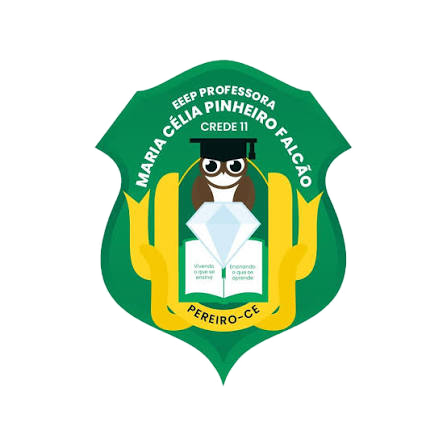

O ambiente ao redor, narrado em áudio — para quem não pode vê‑lo.
Ver+ é um dispositivo wearable de visão computacional que descreve pessoas, expressões faciais, objetos e distâncias em tempo real, ampliando a autonomia e a convivência social de pessoas com deficiência visual.
O problema
A cidade fala uma língua que nem todo mundo enxerga.
A Lei Brasileira de Inclusão garante o direito à autonomia e à participação social de pessoas com deficiência. Na prática, boa parte da informação do dia a dia — quem está por perto, o que expressa, o que existe no espaço — ainda é quase inteiramente visual.
Informação não-verbal invisível
Expressões faciais, gestos e presença de pessoas raramente chegam por outros canais além da visão.
Ferramentas focadas em locomoção
Bengala e cão-guia ajudam a evitar obstáculos, mas dizem pouco sobre quem e o que está ao redor.
Barreira à convivência social
A falta de acesso a esse contexto limita a interação, a autonomia e o exercício pleno da cidadania.
A solução
Um app que enxerga pelo celular e conta ao ouvido.
O Ver+ funciona como uma extensão periférica do smartphone: a câmera captura o ambiente, uma inteligência artificial interpreta a cena e o resultado chega ao usuário como fala, em segundos.
Captura
A câmera do celular (ou uma câmera externa) registra um frame do ambiente.
Envio
A imagem é redimensionada e comprimida para processamento.
Análise por IA
Modo online via API Groq (multimodal) ou modo offline com algoritmo próprio.
Texto → fala
A descrição é convertida em áudio por um sistema de Text‑to‑Speech.
Entrega
O áudio toca no fone — com fio, Bluetooth ou integrado ao dispositivo físico.

Interface simples, três modos de operação
O app alterna entre modos Offline, Híbrido e IA Online, com seleção de provedor (Groq, Gemini, OpenAI). A cada captura, a cena é descrita em português e lida em voz alta — evitando repetições quando a cena não muda.
Decisões de projeto
Pilares técnicos
Nuvem + local
A API Groq entrega descrições mais ricas e precisas no modo online; um algoritmo próprio garante funções básicas quando não há internet.
IA multimodal
O modelo interpreta a imagem e gera descrições em português, identificando expressões faciais, gestos, objetos e a cena em geral.
Privacidade por padrão (LGPD)
Nenhuma imagem é armazenada em dispositivo ou logs — cada frame é descartado logo após o processamento, com consentimento explícito nos testes.
O dispositivo
Do app ao vestível: o próximo passo físico
Embora a inteligência do sistema esteja no aplicativo, um modelo 3D foi projetado no Blender para ilustrar o produto final: um dispositivo retroauricular, discreto como um aparelho auditivo.
-
CAM
Câmera frontal (ESP32‑CAM)Posicionada para capturar o campo de visão do usuário em tempo real.
-
FONE
Fone de ouvido integradoSaída de áudio das descrições geradas pelo sistema.
-
BTN
Botões físicosLigar/desligar, controlar volume e ativar a análise por toque ou comando de voz.
-
WiFi
Conexão com o smartphoneTransmite o vídeo captado para o app, que concentra o processamento.

Quem faz o Ver+
Equipe
Estudantes da EEEP Professora Maria Célia Pinheiro Falcão, com orientação de professores da escola, desenvolvendo o projeto Ver+.
Equipe MOCICULT 2026
XIV MOCICULT — Mostra de Ciências, Cultura e Tecnologia.

Gustavo Araujo Feitosa

Paulo Gabryel de Araújo Alves

Pedro Víctor Nunes de Souza

Raycia Jordana Souza Silva

Massaro Victor Pinheiro Alves

Fabrício Cândido Duarte de Lavor

EEEP Professora Maria Célia Pinheiro Falcão
Empreendedorismo
Equipe Startup
Gestão de Startup I, II e III
Formação estendida do time, voltada para o desenvolvimento do Ver+ como startup, para além da mostra científica.
Gustavo Araujo Feitosa
Paulo Gabryel de Araújo Alves
Pedro Víctor Nunes de Souza

Francisco Gabriel Fernandes de Freitas

Ellen Cristina Maia de Freitas

Charles Gabriel Freire da Silva

Antônio Lourenço Aquino Moreira
Caderno de campo
Registros do desenvolvimento
Momentos das reuniões de ideação, testes do aplicativo e modelagem 3D do dispositivo, documentados ao longo do projeto.
Ficha técnica
Resumo do projeto
Fale com a gente
Contato
Quer saber mais sobre o Ver+, propor uma parceria ou acompanhar o projeto de perto? Fale com a equipe pelos canais abaixo.